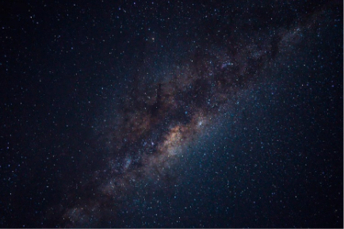

El Sistema Solar es un conjunto formado por el Sol y los ocho planetas que giran a su alrededor. De los ocho planetas, uno es donde vivimos: la Tierra.
Además de estos elementos hay otros cuerpos celestes que también orbitan alrededor de la gran estrella solar, como los satélites de cada planeta, los cometas o los asteroides.
En el universo hay millones de galaxias. Una de ellas es la que conocemos como Vía Láctea.
La Vía Láctea, formada por estrellas, polvo y gas, tiene forma de espiral. Podría decirse que su aspecto es algo así como un remolino con varios brazos; pues bien, en uno de ellos, el llamado brazo de Orión, se encuentra el Sistema Solar.
Lo cierto es que hace tanto tiempo que es muy difícil saber este dato con seguridad, pero se cree que fue hace… ¡4.5 MIL MILLONES DE AÑOS! Si lo piensas bien te darás cuenta de que estamos hablando de un espacio temporal impactante y que nos resulta difícil de imaginar.
Este es otro tema que todavía no está del todo claro, pero según las últimas investigaciones parece ser que la fortísima explosión de una estrella provocó que una gran nube de gas y polvo se contrajera y empezara a girar a gran velocidad. Por lo visto, la mayor parte de esta materia se concentró en el centro y se fue calentando cada vez más y más, hasta formar una gran estrella: el Sol. Después, alrededor del Sol, el resto de polvo y gas fue chocando y juntándose hasta formar los diferentes planetas.
El Sol es el gran protagonista de este sistema, que por eso se llama Sistema Solar. Está situado en el centro y todo gira en torno a él.
El Sol es una estrella inmensa que emite luz y calor. Sin el Sol, la vida en la Tierra no existiría.

Los planetas del Sistema Solar son ocho cuerpos celestes sólidos de forma casi circular. A diferencia del Sol, no tienen luz propia.
Los planetas están siempre moviéndose y girando alrededor del Sol. A este movimiento se le llama movimiento de traslación, y cada uno lo hace en un tiempo diferente. El tiempo que nuestro planeta Tierra tarda en dar la vuelta completa al Sol es lo que llamamos año, es decir, 365 días. Sí, eso es: cada año que vivimos es una vuelta que da la Tierra alrededor del Sol.
Además de esta órbita, la Tierra gira sobre sí misma y tarda exactamente 24 horas. Para nosotros es un día completo. Esto se conoce como movimiento de rotación.
Por tanto, mientras la Tierra da una vuelta completa alrededor del Sol (un año) gira sobre sí misma 365 veces (365 días).
Por orden, de más cercano a más lejano del Sol, los planetas son: Mercurio, Venus, Tierra, Marte, Júpiter, Saturno, Urano y Neptuno.